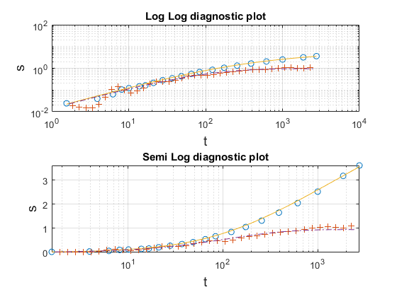
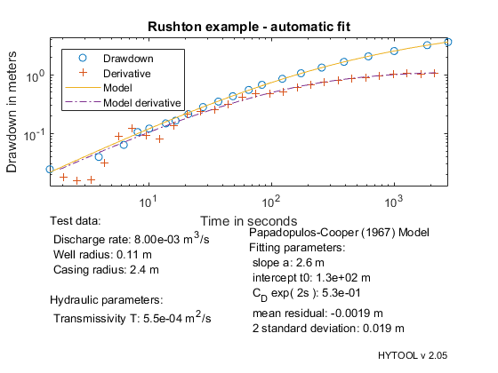

Drawdown in the well.
This demonstrates the interpretation of a Drawdown in the well with well-bore storage effect with Papadopulos and Cooper (1967) solution
MIT License Copyright (c) 2017 Philippe Renard - University of Neuchâtel (CHYN)
The data set for this example comes from the following reference: Rushton K.R. and Holt S.M., 1981, Estimating aquifer parameters for large-diameter well. Ground Water, 19(5): 505-509 Digitized from figure 3b page 508. The test is conducted in a well in a confined aquifer in south India.
Let us first load the data and plot them.
[t,s]=ldf('pcw_ds1.dat');
| HYTOOL Demo |
We then define the values of the parameters that are required for the interpretation:
Q=0.007997685185185; % Pumping rate in m3/s rw=0.1078; % Radius of well screen in m rc=2.4; % Radius of the casing in m
Once the data have been loaded and the parameter defined, we can interpret the data. We do that as usually in two steps. First we can estimate the parameter p with the function pcw_gss. Then we find an optimum fit.
p0= pcw_gss(t,s); trial('pcw',p0,t,s); p1=fit('pcw',p0,t,s);
Norm of Norm of
Iteration SSE Gradient Step
-----------------------------------------------------------
0 0.0483136
1 0.00838534 0.0259841 5.7774
2 0.00706771 0.0253783 4.17154
3 0.00619924 0.0265814 4.06539
4 0.00546013 0.0221701 3.96861
5 0.00483946 0.0180584 3.83604
6 0.00431985 0.0146188 3.68984
7 0.00388642 0.0117999 3.52607
8 0.00352621 0.00947066 3.3479
9 0.00322719 0.00754088 3.16725
10 0.00297943 0.00594262 2.98369
11 0.0027748 0.00467694 2.79552
12 0.00260578 0.00364595 2.61448
13 0.00246651 0.00278929 2.43424
14 0.00242073 0.116512 12.2388
15 0.00207181 0.0892705 12.2493
16 0.00183196 0.00119029 1.66044
17 0.00183191 8.50778e-06 0.131107
18 0.00183191 9.74167e-06 4.66008e-08
Iterations terminated: relative norm of the current step is less than OPTIONS.TolX
 We can then display the result of the interpretation. Hytool find that the folowing values fort the transmissivity :
T = 5.5 e-4 m2/s
pcw_rpt(p1,t,s,[Q,rw,rc],'Rushton example - automatic fit')
 The results are in reasonable agreement with the values found by Rushton K.R. and Holt S.M. : T = 2.77 e-4 to 3.36 e-4 m2/s
We then find that the fits are rather similar and both acceptable.